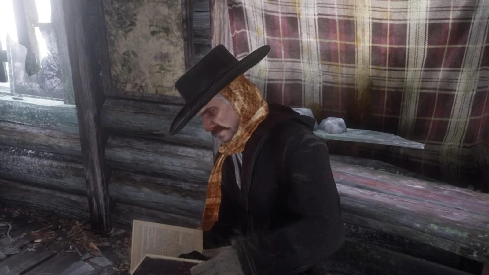
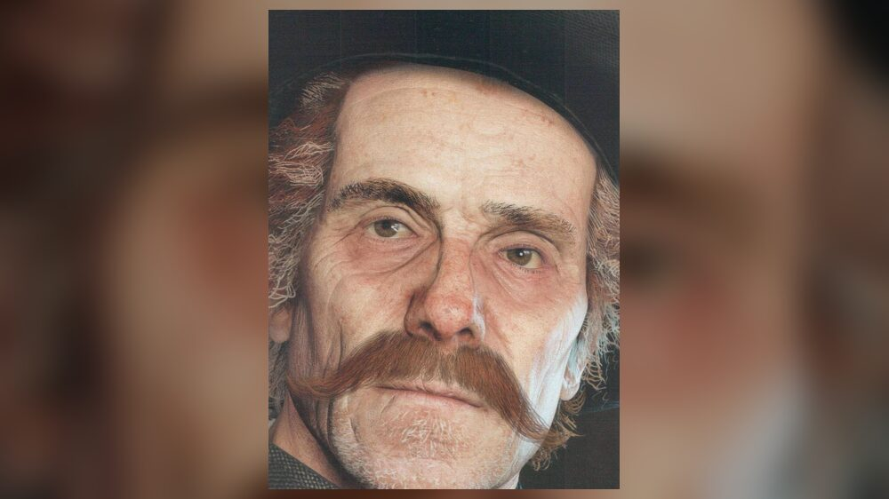
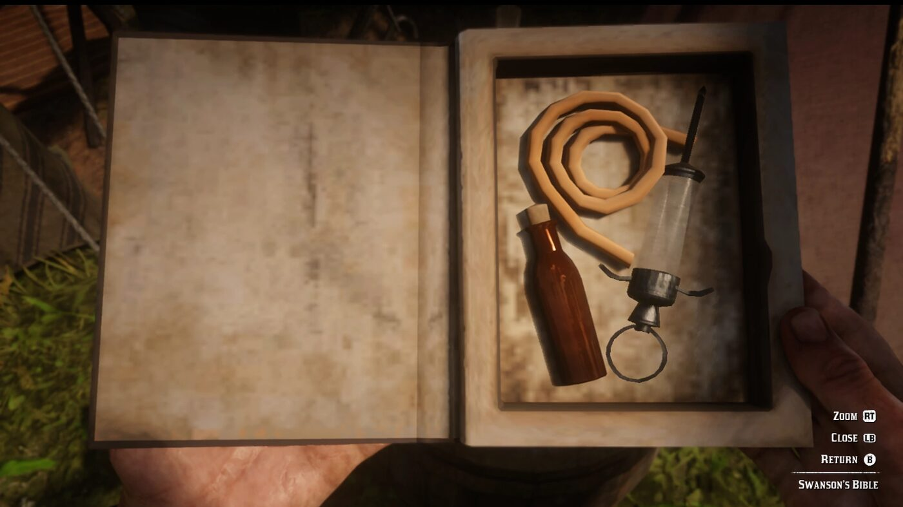

Character · Van der Linde gang
Orville Swanson
Reverend Orville Swanson is the chaplain of the Van der Linde gang in Red Dead Redemption 2. A former clergyman who lost his job, his family and his faith to drink and morphine, he is kept in the gang because he once saved Dutch van der Linde's life.
His story is one of the few genuine redemption arcs in the game.
- Affiliation
- Van der Linde gang
- Role
- Chaplain
- Status
- Alive (survives RDR2)
- Past
- Former clergyman
- Games
- Red Dead Redemption 2
Biography
The drunken reverend
Swanson speaks the very first line of dialogue in the game, at Colter. In Chapter 2, in "Who is Not Without Sin", Arthur has to free a drunk Swanson whose foot is caught on the railroad tracks before a train arrives. His "bible" is a painted box hiding alcohol and morphine.
Getting sober
By the time the gang returns from Guarma, Swanson has sobered up and kicked his morphine addiction, becoming clear-eyed and sensible. He sees through Dutch's decline, saying he will not die for the nonsense of a fool.
Fate
Relationships

Dutch van der Linde
The gang leader whose life he once saved, his reason for being in the gang.

Hosea Matthews
The gang elder he confides in at the campfire.

Arthur Morgan
The gang member who pulls him off the railroad tracks, and whom he sizes up at the end.
Behind the scenes
Orville Swanson appears in Red Dead Redemption 2 (2018). He is voiced by Sean Haberle.
Trivia
- He speaks the first line of dialogue in Red Dead Redemption 2.
- His hollow "bible" hides a syringe, morphine and alcohol.
- He gives Arthur an honour-based parting assessment at Emerald Station.
Gallery
